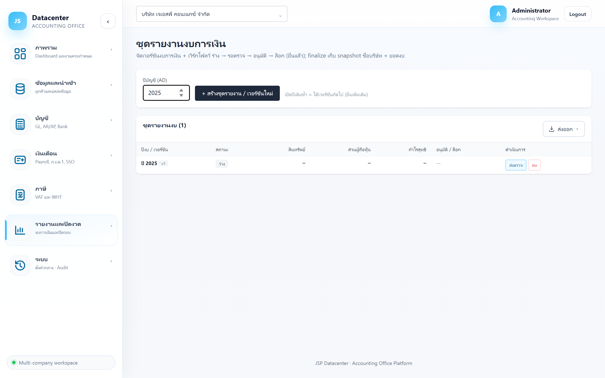

คู่มือการใช้งาน › รายงานและปิดงวด › ชุดรายงานงบ
ชุดรายงานงบการเงิน
บันทึกงบการเงินของแต่ละปีเป็น เวอร์ชันถาวร พร้อมสถานะการอนุมัติ — ทำให้ตอบได้เสมอว่า “งบที่ยื่นไปตัวเลขเท่าไร ใครอนุมัติ เมื่อไร”
ต่างจากหน้างบการเงินอย่างไร
งบการเงิน = คำนวณสดจากข้อมูลปัจจุบัน (เปลี่ยนได้ตลอด) · ชุดรายงานงบ = ภาพนิ่งที่ตรึงไว้ ณ ตอนสร้าง พร้อมสถานะการอนุมัติ
1. การเข้าใช้งาน
- เลือกบริษัทลูกค้า ที่แถบด้านบน
- เปิดเมนู รายงานและปิดงวด → ชุดรายงานงบ
- กรอก ปีบัญชี (ค.ศ.) แล้วกดปุ่มสร้างชุดรายงาน
สร้างปีเดิมซ้ำได้
สร้างปีเดิมอีกครั้งจะได้ เวอร์ชันถัดไป ไม่ทับของเดิม — ใช้กรณี ยื่นเพิ่มเติม/แก้ไขงบ โดยยังเก็บเวอร์ชันที่ยื่นครั้งแรกไว้เป็นหลักฐาน
2. อ่านตาราง

| คอลัมน์ | ความหมาย |
|---|---|
| ปีงบ / เวอร์ชัน | ปีบัญชีและลำดับเวอร์ชันของปีนั้น |
| สถานะ | ดูตารางสถานะด้านล่าง |
| สินทรัพย์ | ยอดรวมสินทรัพย์ที่ตรึงไว้ในเวอร์ชันนั้น |
| ส่วนผู้ถือหุ้น | ยอดรวมส่วนของเจ้าของ |
| กำไรสุทธิ | กำไรสุทธิของปีนั้น |
| อนุมัติ / ล็อก | ชื่อผู้อนุมัติและเวลา · ถ้าล็อกแล้วจะมีบรรทัดสีแดงบอกผู้ล็อกและเวลา |
| ดำเนินการ | ปุ่มที่ทำได้ — เปลี่ยนตามสถานะปัจจุบัน |
3. สถานะและปุ่มที่ทำได้
| สถานะ | ความหมาย | ปุ่มที่ทำได้ |
|---|---|---|
| ร่าง | เพิ่งสร้าง ยังแก้ไขได้ | ส่งตรวจ · ลบ |
| รอตรวจ | ส่งให้ผู้มีอำนาจตรวจแล้ว | อนุมัติ (Final) · ตีกลับร่าง |
| อนุมัติ (Final) | อนุมัติแล้ว พร้อมยื่น | ล็อก (ยื่นแล้ว) · แก้ไข (กลับรอตรวจ) |
| ล็อก (ยื่นแล้ว) | ยื่นแล้ว ตรึงไว้เป็นหลักฐาน | ปลดล็อก (กลับเป็น Final) |
ลบได้เฉพาะตอนเป็นร่าง
เมื่อส่งตรวจแล้วจะลบไม่ได้อีก — ต้องตีกลับเป็นร่างก่อน กันไม่ให้เวอร์ชันที่เคยผ่านตาผู้ตรวจหายไปเงียบ ๆ
“ปลดล็อก” ใช้เท่าที่จำเป็น
ล็อกแปลว่ายื่นไปแล้ว การปลดล็อกจึงควรทำเฉพาะกรณีบันทึกสถานะผิด — ถ้าต้องยื่นแก้ไขจริง ให้ สร้างเวอร์ชันใหม่ แทน เพื่อเก็บทั้งฉบับเดิมและฉบับแก้ไว้คู่กัน
4. ขั้นตอนใช้งานจริง
- ปิดงบเสร็จ — งบสมดุลและรวมรายการปรับปรุงครบ
- สร้างชุดรายงาน ของปีนั้น — ระบบตรึงยอดสินทรัพย์/ส่วนผู้ถือหุ้น/กำไรสุทธิไว้
- ส่งตรวจ ให้ผู้มีอำนาจ
- อนุมัติ (Final) เมื่อตรวจผ่าน
- ยื่น ต่อกรมพัฒนาธุรกิจการค้าและกรมสรรพากร
- ล็อก (ยื่นแล้ว) — เก็บเป็นหลักฐานถาวร
- ล็อกงวดถาวร ที่ ปิดรอบบัญชี
5. ปัญหาที่พบบ่อย
| อาการ | สาเหตุและวิธีแก้ |
|---|---|
| ยอดในชุดรายงานไม่ตรงกับหน้างบการเงินแล้ว | ปกติ — ชุดรายงานตรึงยอด ณ ตอนสร้าง ส่วนหน้างบคำนวณสด ถ้าตัวเลขปัจจุบันถูกกว่า ให้สร้างเวอร์ชันใหม่ |
| ลบชุดรายงานไม่ได้ | ไม่ได้อยู่สถานะ “ร่าง” — ตีกลับเป็นร่างก่อน |
| สร้างชุดแล้วยอดเป็น 0 | ปีนั้นยังไม่มีข้อมูลหรือยังไม่ได้ map บัญชี — ตรวจที่ งบการเงิน ก่อนสร้างใหม่ |
| มีหลายเวอร์ชันจนสับสน | ดูคอลัมน์ “อนุมัติ / ล็อก” — เวอร์ชันที่ล็อกคือฉบับที่ยื่นจริง |
ถัดไป
คลังเอกสาร / หลักฐาน → เพื่อเก็บเอกสารประกอบให้ครบ